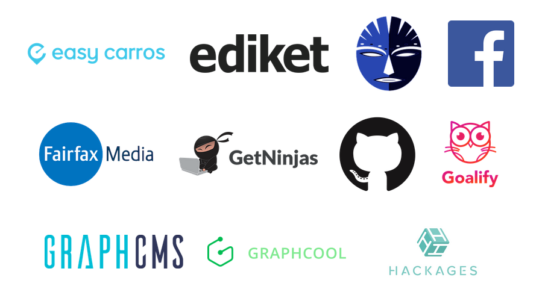
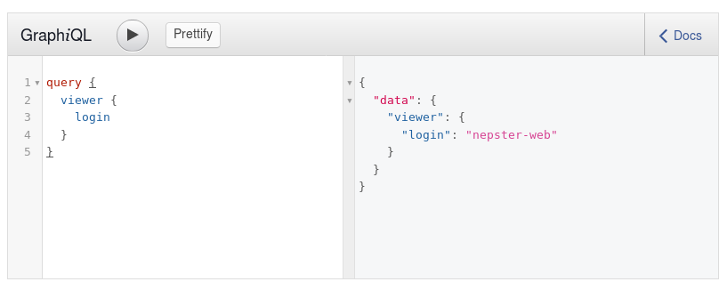

О себе
- PHP Developer
- Стартапер


О работе
Мультиканальный, комплексный сервис в индустрии путешествий, который работает с такими сегментами рынка как: отели, авиа и жд билеты, круизы, трансферы, а также рестораны, концерты и другие виды досуга.
- Стартап
- PHP 7.1
- Не в продакшене
API
(Application Programming Interface)
Какие есть виды API?
- SOAP
- REST
- JSON API
- OData
- GData
- MQL
- SparQL
- ...
Популярные API
- Почти RESTful
- RESTful
- SOAP
- JSON API
Что выбрать для разработки API?
Поговорим о RESTful
Минусы RESTful
Что делать?
GraphQL
(A query language for your API)Языковая поддержка GraphQL
- PHP
- Go
- Java
- JavaScript
- C# / .NET
- Scala
- Python
- Ruby
- ...
Who’s using GraphQL?
https://github.com/APIs-guru/graphql-apis

GitHub GraphQL API
https://developer.github.com/v4/explorer/

Плюсы GraphQL
- -
- -
- -
- -
- -
- -
- -
пример запроса в GraphQL
GraphQL в PHP
https://github.com/webonyx/graphql-phpПример схемы
Пример типов
Подробная документация
http://webonyx.github.io/graphql-php/Перевод на русский
Почитать:
- GraphQL specification.
- Learn GraphQL.
- Что же такое этот GraphQL?
- Почему за GraphQL будущее.
- Анатомия запросов GraphQL.
- Сравнение REST и GraphQL.
- Покойся с миром, REST. Долгих лет жизни GraphQL.
Делаем GraphQL API на PHP и MySQL.
Вопросы
https://github.com/nepster-web/conf-info/2017/CodeID-GraphQL